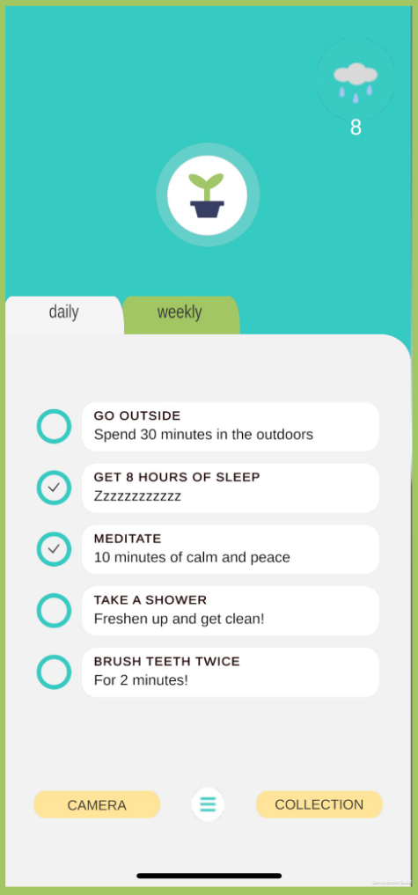
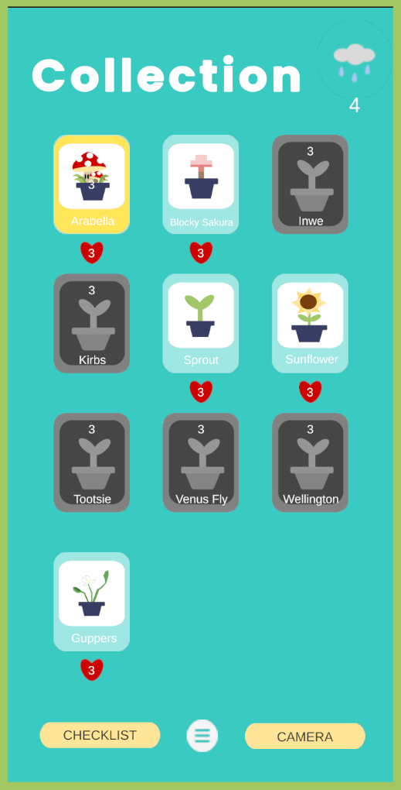
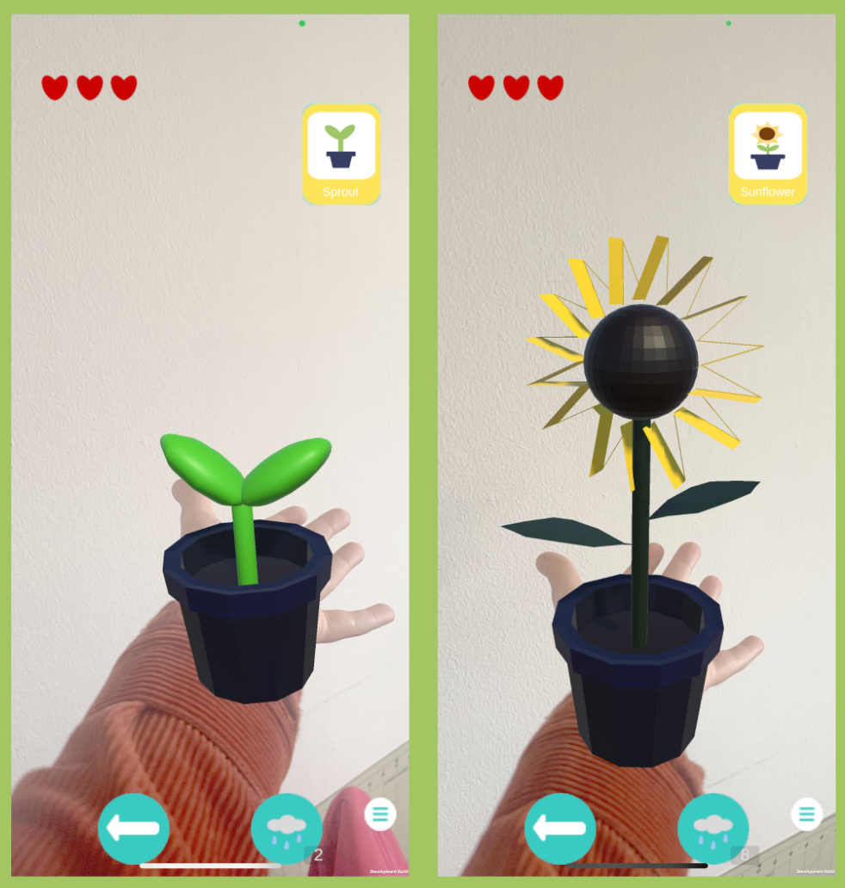

As part of the AR Cohort at ARI (University of Michigan's XR Club), we made an augmented reality mobile app to manage wellbeing.
Players can earn water by completing tasks and use that to tend to their virtual garden. With Niantic Lightship SDK, we utilized
their palm tracking feature to anchor the plant in real world space. This was my first XR-related project and I was able to practice
Unity and Blender and Git.
What I Worked On:
- Create the AR camera and integrated palm tracking features with Niantic Lightship SDK
- Created Scriptable Objects for plants and integrated plant selection
- 3D modeled plant as part of the plant collection


